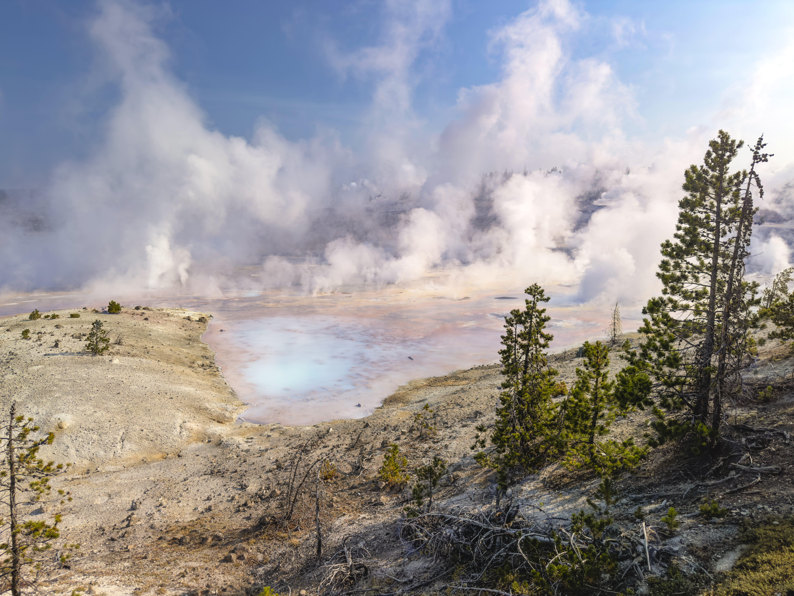
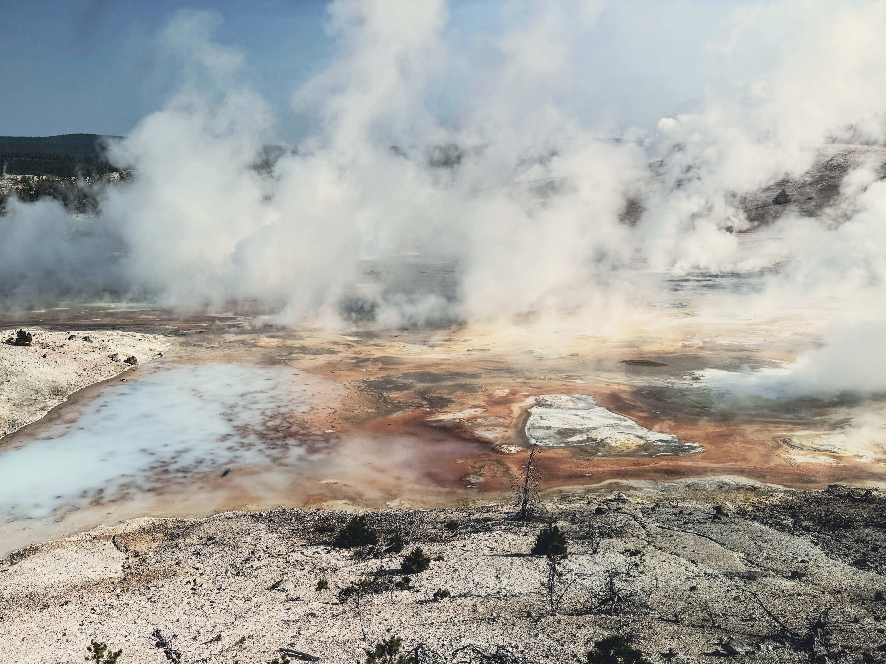
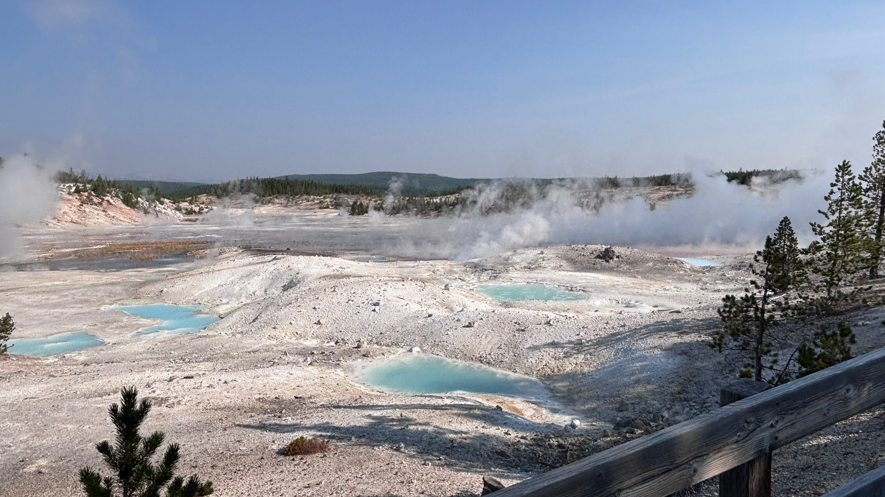
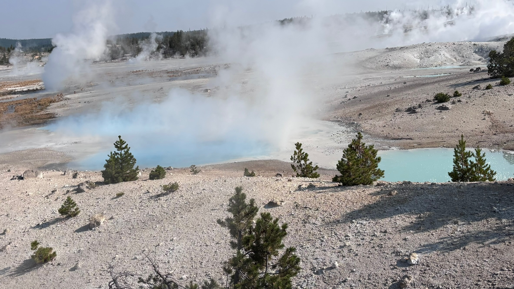
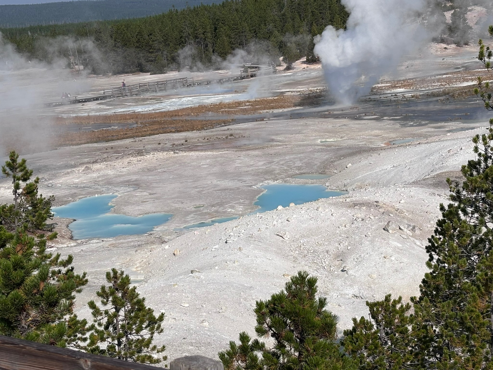
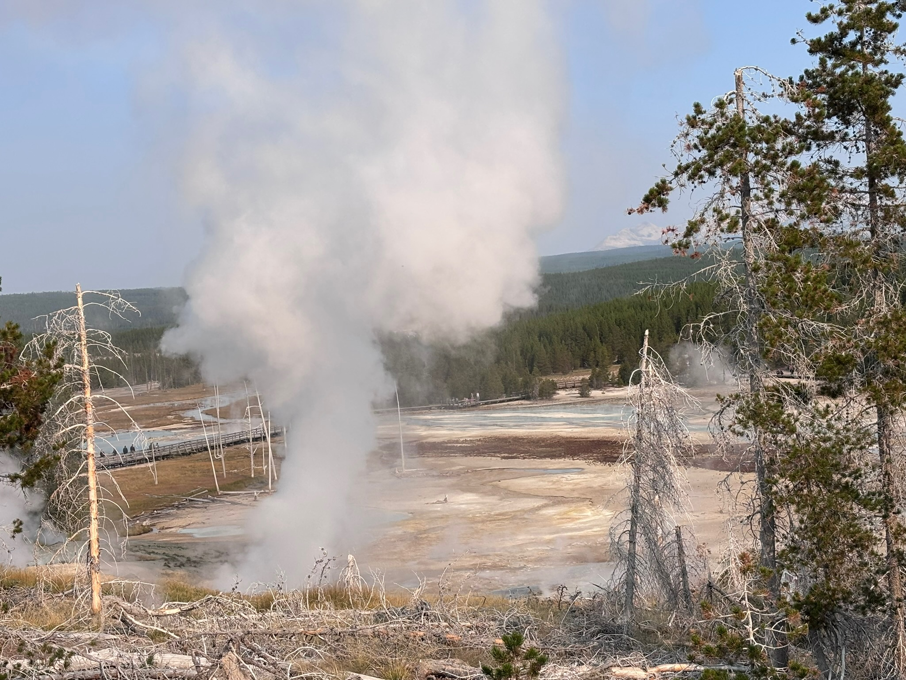
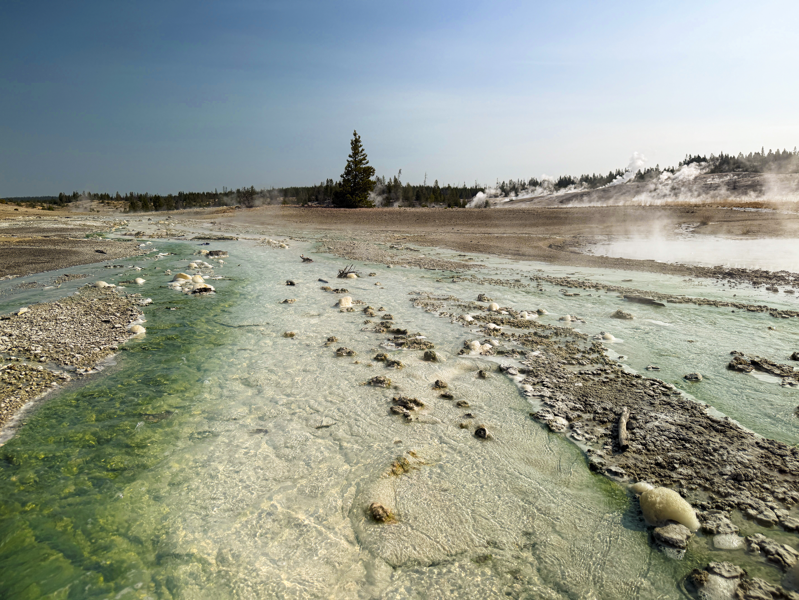
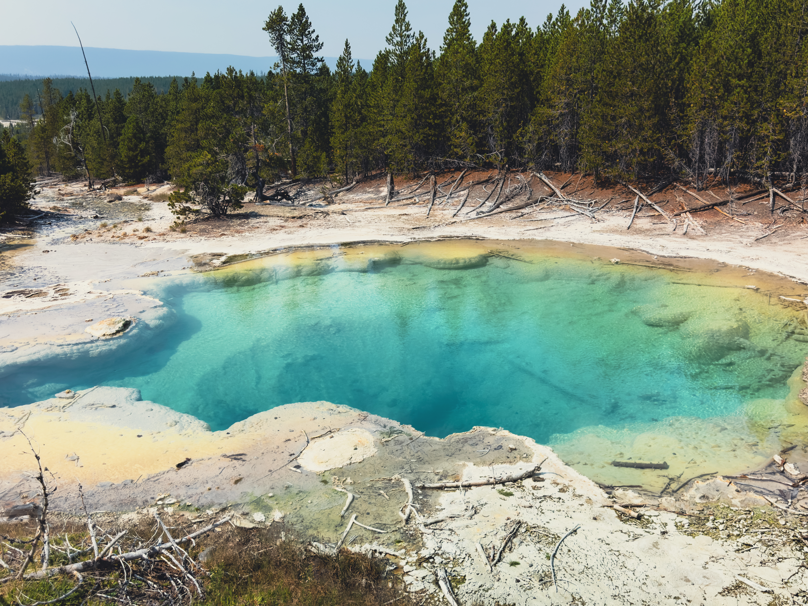

About Norris Geyser Basin
Day 3 of the Yellowstone trip
Norris Geyser Basin, split into the more photogenic Porcelain Basin, and the more story-filled Back Basin, part of which was actually closed when we got there due to hydrothermal activity. Norris Geyser Basin as a whole is the most active place in yellowstone, and is often met with changes in its features. It has quite a bit of story, as well as harboring one of the world's few acidic geysers and one of the tallest unpredictable one too, being Steamboat Geyser.
Gallery:
 Pictured here is my personal favorite destination, and perhaps the most visually striking destination in the park: Porcelain Basin. Ludicrous amounts of silica seep from the rock and crystalize, forming the foggy sky blue portions. |
 Enormous collections of microbes are visible, alongside steaming vents, springs, and even geysers, the surrounding ground too hot for anything to grow. Alongside incredible heat and acidity, formations here take centuries to form, hence the flatness. |
 A view of the Porcelain Basin from afar, showing off the numerous steaming springs and geysers, and the Basin's striking flatness. Visible closer are several silica-covered springs of varying thickness, each at a different age of such coverage. |
 More silica-covered springs, alongside steaming springs. Surprisingly, despite the bleached-looking appearance of the nearby land and its proximity to the basin, trees are once again beginning to grow; the ground has likely cooled. |
 Although some of the many silica-covered springs may draw your attention, there are actually small geysers errupting in the back. This is not a very uncommon occurrence, but it is very random; every single geyser in this basin is such. |
 Quite interestingly, activity seemed to increase a bit during our visit; this image is of a billowing steam vent from behind. It created a low rumble, audible from the entire porcelain basin. The weird trees died from it, absorbing too much silica. |
 Unlike a plethora of other places in Yellowstone, Norris' long runoff trails may harbor algae. Unlike thermo(acido)philic bacteria, the algae require a sweet spot, hence the lacking growth, the water almost next to it being too hot for growth. |
 Pictured here is Emerald Spring, the name only somewhat misleading. Periodically, the spring may appear to be green, due in part to the brilliant blue water, combined with sulfur deposits lining the walls. Behind it and to the left, you can see its runoff. |